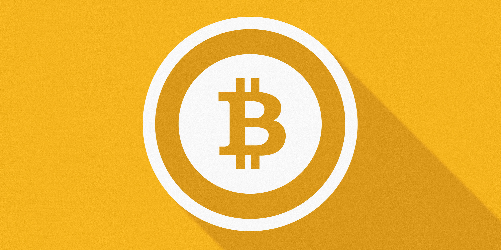

비트코인은 미래입니다
코인알아보기
- bitcoin
- monero
- ripple
모네로
2014년 4월 개발된 가상화폐로, 가상화폐 중에서도 가장 완벽하게 익명성을 보장해준다는 특징이 있다. 기존의 가상화폐의 경우 각 거래자의 지갑에 고유 주소가 부과되기 때문에 주소의 주인을 알 수는 없으나 거래 내역은 알 수 있다
[네이버 지식백과] 모네로 (시사상식사전, 박문각)
거래소별 실시간 가격 확인하기
빗썸으로 출발~!
bitcoin
moner is very cheep!
